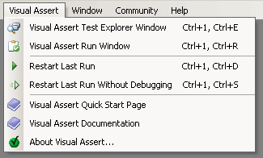
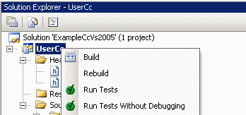

Welcome to Visual Assert
Visual Assert has been installed successfully. In the Visual Studio main menu, you will now find an additional entry, Visual Assert:
Similarly, the Solution Explorer context menu has been extended by two additional commands:

Tutorial
A step-by-step walkthrough of how to create a unit test project, run, and debug tests can be found in in the HTML Help File.The help file also contains further information and the complete API reference. To quickly access the documentation, choose Visual Assert Documentation from the Visual Assert menu.